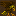
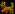
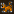
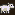
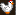
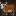

Hermit Pets
The hermit can only take pets that are considered personal pets. He has a dog for guard duty, a hawk for hunting and a cat to catch vermin. You can only buy the male version of these animals, because having breeding animals to supply leather, bones and food for a single person would be way too easy.
You could also take a sheep for fleece, a cow for milk or a chicken for eggs. These are only female, again to stop people abusing breeding too much, and add a lot more resources.
Since the hermit can become a druid, and tame wildlife that roams the map, you might have access to any creature on the map. This depends on how well you treat animals and how high your nature merit is. For more info see the Nature Altar in the workshop section.
 ::: Hawk ::: Price 51
Small bird of prey, catches vermin and can be trained for hunting.
 ::: Dog ::: Price 16
Medium sized canine, usually bought as guard animal. Can be trained for the hunt or war. In addition can learn combat skills and can be armored in either iron or steel, unlocked by the farmers guild. These upgrades also affect the attack power of the animal.
 ::: Cat ::: Price 11
Small feline, usually bought for pest control. Adopts its owner and hunts vermin. Great backup food source. Kitten meat burgers are great.
::: Sheep ::: Price 51
Smallish quadruped that can be sheared for fleece, giving 3 units of thread/cloth each time.
 ::: Chicken ::: Price 16
Smallish bird that lays eggs and can give feathers when butchered. Mostly used for relyable food production.
 ::: Cow ::: Price 151
Large quadruped farm animal, which can be milked.
Plump Helmet Men

- PHM can have between 1-10 children at a time, averaging 5 per female. If you're not careful, they may attain the majority so fast that you won't be able to bring down their numbers quickly enough.
- PHM will do a headcount of all non-PHM creatures in the immediate area. If they realize that they are the majority, they will rebel. It takes them about 1-2 weeks to figure out that they are the majority. This has no visible effect at first.
- A rebellious phase lasts for 1 week.
- Rebelling PHM will be intimidated by nearby creatures. They will usually not attack unless they outnumber their opponents.
- Rebelling PHM will not be intimidated by unconscious or sleeping creatures.
- Rebelling PHM can sometimes drain blood from sleeping creatures like vampires. This effect lasts for half a year after the rebellion actually starts.
- PHM cannot tell one species from another, but they can tell if the creature had been in a fight within the last year and did not run away. Creatures who fight can intimidate up to 5 PHM at once, so they will usually not be attacked unless they are greatly outnumbered.
- Once a group of PHM decide to attack, they do so by going berserk. Nearby creatures may be attacked even if they were not the actual target.
- Sometimes rebelling PHM will attack each other.
- Rebellious PHM living for a long time underground have a small chance of inflicting necrosis on themselves. This will generate miasma, causing bad thoughts.
- PHM can pick locks - forbidding doors will not control them.
- Rebellious PHM cannot be contained reliably by a far-off pasture, because they have a small chance of randomly going berserk.
- Trying to contain PHM behind walls to prevent gang attacks is a risky strategy - if they don't see any non-PHM creature for a while, they will rebel entirely and may rush the door the moment it is opened.
- Soldiers will not obey direct orders to kill a rebellious PHM that is now docile. However, they may choose to attack one on their own if it had been seen killing someone (the ones with names are the ones that made a kill).
- Killing rebellious PHM has a chance of starting a loyalty cascade.
- The best way of controlling PHM with limited dwarfpower is to pasture them nearby a major pathway, making sure that they can see all the dwarves that pass by. Large numbers of tame animals can also prevent PHM from rebelling. Separating them into small groups can help prevent attacks during a rebellion, as can the presence of guards that have been in combat. Or you could go the simplest method: just eat them!
|